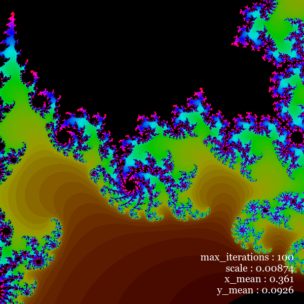

Cette page a été créée pricipalement à visée éducative. On peut y
trouver diverses simulations qui génèrent des fractales.
Il est également possible de télécharger les résultats obtenus via la
simulation en cliquant-droit et en selectionnant "enregistrer l'image".
